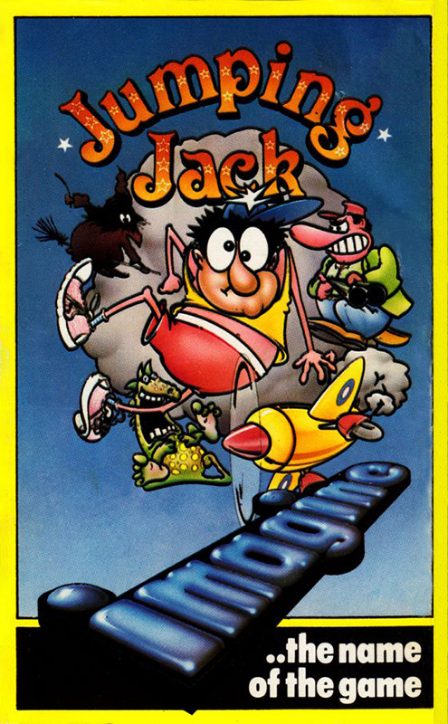
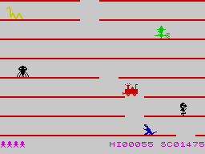

Jumping Jack


{kind=link}

| Publisher: | Imagine |
| Price: | £5.50 |
| Year: | 1983 |
| Source: | CRASH, Issue 3 |
No review in CRASH for this game, this is a snippet from CRASH issue 3, from the Spectrum Guide section.

At first sight the extremely simple graphics might be a disappointment — but this is a classic game. Jack's stick figure is beautifully animated The platforms are merely thin black lines. At first there are only two holes, one moving down level by level, and one moving up similarly. Each successful jump creates another hole, so it gets frustratingly difficult to progress. Should Jack fall down a hole he lies stunned, if he falls through two he's out for even longer If he falls all the way to the bottom he loses a life. Getting right to the top results in a line from a poem you have to collect the rest of the lines, but the poem isn't the real reward in this game — it's playing the game. Subsequent levels add more monsters which must be avoided by using the wrap around screen. By the time you're dealing with twenty holes and six monsters its a nut house. Quite simply one of the most addictive games around and excellent value for money.